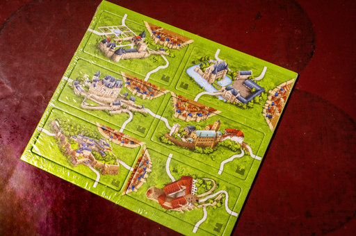

カルカソンヌのミニ拡張、ドイツの城が届いた。
ドイツの城の拡張ルールが欲しかったというより、モノとしてのドイツの城のタイルが正直欲しかった。つまりジャケ買いなのだ。
カルカソンヌは第 3 版からはタイルが特に美しくなっていて、見ると欲しくなってしまう。やばいなぁ、術中にはまってしまっているなぁ、と思いつつもパブリッシャーは企業規模としては中小企業らしいので、事業存続を願う意味もあってなけなしの円を突っ込んでいる。
このドイツの城ミニ拡張はパブリッシャーではすでに廃版になっており、海外のディストリビュータの EC サイトを探し回らないと手に入らない。もちろん市場在庫の捌け具合によっては再版もあるかもしれないが。
海外のボードゲームディストリビュータから購入するなら正規の価格かもしくは割引された価格で購入できるが、なにせ海外からの送料は高いのでミニ拡張単品で購入するとなるとなかなか踏ん切りがつかない。しかも現在は円が対ドル、対ユーロで異常に安く、海外サイトで購入となると悲しくなるくらいの円が必要になる。
今持っているカルカソンヌの拡張やミニ拡張の版が第 2 版のものが多いので (パブリッシャーは現在第 3 版への切り替えを進めている)、第 3 版が出たら買い増ししてしまうんだろうな。